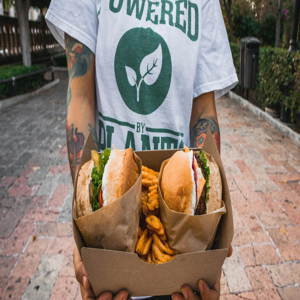

Algunos Proyectos Académicos

Testing de AplicacionesSUBIDO
Proyecto basado en crear casos de prueba de front end de una página de prueba y automatizar algunos de esos TCs.

Diseño y Desarrollo WebSUBIDO
Proyecto basado en realizar la página de una hamburguesería utilizando HTML, CSS, JS, Boostrap y JQuery.
Sistemas de Información IISUBIDO
Proyecto basado realizar los requerimientos funcionales y no funcionales para una aplicación de hospital, teniendo un fuerte sentido por los Stake Holders.
Programación con PythonSUBIDO
Proyecto basado en el clásico juego del crucigrama llamado "CruxyUade", en dónde se muestra el tablero por consola.